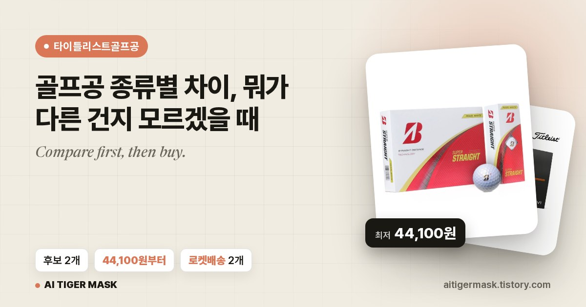

63초는 발행 스크립트가 브라우저를 띄운 순간부터 글 주소와 링크를 대조하고 끝난 순간까지입니다(2026-09-18, 글 5번, 로그 완료 63초 · 1485자 · 사진 6). 그 앞의 초안 쓰기(클로드)·사진 받기는 포함하지 않았고, 그것까지 하면 한 편에 4분쯤 걸립니다.
지금은 전부 비공개로 올리고 제가 열어 본 뒤 공개로 바꿉니다. 그러니 이 방식으로 번 돈은 아직 0원입니다. 자동 발행 자체가 되는지를 공개하는 글이지 수익을 약속하는 글이 아닙니다.
제가 한 건 키워드 하나 넣은 것뿐입니다
네이버 검색 API로 그 키워드의 지식iN 질문 원문 10개를 받아 클로드에게 줍니다. 사람들이 실제로 물어본 말이 제목과 소제목이 됩니다. 이번 글의 키워드(타이틀리스트골프공)는 지식iN에 질문이 1,256개 걸려 있었습니다(검색 결과 화면 기준).
상품명·가격·로켓배송 여부·사진을 API가 준 대로만 씁니다. 이번 글은 후보 2개, 최저 44,100원. 링크는 글마다 다른 꼬리표(subId)를 붙여서 어느 글이 벌었는지 나중에 갈립니다.
Pexels 4장 + 상품 사진 1장 + 대표 사진 1장. 대표 사진은 cover.js가 제목·후보 수·최저가·상품 사진을 읽어 1200x630 으로 그립니다. 검색 결과와 카톡 미리보기가 쓰는 비율입니다.
제목·본문·태그를 넣고 사진을 올리고, 쿠팡 링크는 미리보기 카드로 붙인 뒤 발행 버튼까지. 끝나면 글 페이지를 다시 열어 링크가 정말 2개 들어갔는지 대조하고 끝냅니다. 전 과정이 녹화됩니다.

개발 지식은 필요 없고, 클로드 코드만 깔려 있으면 됩니다
카카오 로그인 세션(TSSESSION)은 30일짜리입니다. 크롬에서 로그인 → F12 → Application → Cookies → 표를 복사해 파일로 저장해 둡니다. 만료되면 스크립트가 "세션 만료"로 멈추고 알림을 보냅니다. 사람이 한 달에 한 번 하는 유일한 일입니다.
파트너스 승인 뒤 나오는 액세스 키·시크릿 키. 상품 검색과 딥링크 생성에 씁니다.
지식iN 질문(검색 API)과 사진(Pexels)은 둘 다 무료 키입니다.
제가 친 건 이 한 줄이 전부입니다. 나머지 규칙은 네이버 편에서 이미 세워둔 걸 그대로 물려받았습니다.
네이버 블로그 자동화처럼 티스토리도 되게 해. 베스트 프랙티스 총동원.
네이버 편과 같습니다. 어기면 발행하지 않고 멈춥니다
<h3> 태그로. 구글이 읽는 자리입니다.쿠팡 링크를 그냥 붙이면 미리보기 카드가 안 뜹니다. 쿠팡 딥링크는 봇 접근이 403 이라 티스토리가 OG 정보를 못 긁어옵니다. 그래서 파트너스 API가 준 상품명·사진·가격으로 미리보기 카드를 우리가 채워서 넣습니다(data-ke-type="opengraph" 피겨).
임시저장 복구창이 새 글을 막습니다. 글쓰기 페이지를 열면 지난 임시저장을 불러올지 묻는 네이티브 confirm 이 뜹니다. 안 받아주면 그 자리에서 멈춥니다. 새 글이면 dismiss 로 답해야 합니다.
공개/비공개 라디오는 높이가 0 입니다. 보이는 라벨을 눌러도 안 잡혀서 check(…, {force:true}) 로 강제로 찍어야 합니다.
글 주소를 목록에서 읽을 때 공지가 먼저 잡힙니다. 첫 링크가 notice.tistory.com 이라 내 블로그 호스트로 좁혀야 내 글 번호가 나옵니다.
기본 스킨은 대표 사진 위에 제목을 겹쳐 그립니다. 표지에 이미 제목이 있어서 글자가 두 번 보입니다. 헤더에 썸네일을 안 쓰는 스킨으로 바꾸면 됩니다(저는 아직 안 바꿨습니다).
입력은 글 JSON 하나({title, blocks, tags}), 출력은 글 주소와 페이지에서 읽은 링크 목록입니다
// 티스토리 자동 글쓰기 + 발행 + 전 과정 녹화. 네이버 auto_post.js 의 티스토리판(2026-09-18 사장님 "네이버 블로그 자동화처럼 티스토리도").
// 사용: node tistory_post.js --content=<json> [--publish=none|private|public] [--blog=aitigermask]
// 입력 JSON 은 쿠팡 publish.js 가 만드는 것 그대로({title, blocks:[{t}|{b,size,color}|{img}|{hr}|{quote}|{card}|{sticker}], tags}).
// 출력(마지막 줄들): POST_URL=<글 주소> CARD_HREFS=<글 페이지에서 읽은 쿠팡 링크 배열> , publish.js 가 이 둘을 읽는다.
//
// ★실측 선택자(2026-09-18, probe_editor.js·probe2.js 로 찍음):
// 제목 #post-title-inp · 본문 TinyMCE(#editor-tistory_ifr, window.tinymce.activeEditor) · 태그 #tagText
// 첨부 드롭다운 #mceu_0-open → #attach-image(사진, 파일창이 뜬다) · 모드 #editor-mode-layer-btn-open → #editor-mode-html
// 발행 #publish-layer-btn → 라디오 #open20(공개)/#open15(보호)/#open0(비공개) → #publish-btn(라벨이 "공개 발행"/"비공개 저장"으로 바뀐다) · 취소 #unpublish-btn
// 임시저장 복구는 네이티브 confirm 이라 page.on("dialog") 로 받는다(새 글 = dismiss).
// ★본문 넣는 법: 보통 문단({t})은 키보드로 친다(녹화에 타이핑이 보인다). 서식 블록(소제목·인용·구분선·링크·굵게)은
// tinymce insertContent 로 넣는다 , 네이버처럼 툴바를 더듬을 이유가 없다(TinyMCE 가 API 를 준다). 사진은 파일창으로 실제 업로드.
// ★세션: docs/scrape/creds/tistory_state.json(set_session.js). 만료면 URL 이 /auth/login 으로 튄다 → 쿠키 재요청.
const fs = require("fs"), path = require("path");
const { chromium } = require(require.resolve("playwright-core", { paths: [path.resolve(__dirname, "../_engine")] }));
const D = __dirname, R = path.resolve(D, "../.."), NB = path.join(R, "docs/naverblog-auto");
const opt = k => { const a = process.argv.find(x => x.startsWith("--" + k + "=")); return a ? a.split("=").slice(1).join("=") : null; };
const MODE = opt("publish") || "none";
const BLOG = opt("blog") || (fs.existsSync(D + "/.blog") ? fs.readFileSync(D + "/.blog", "utf8").trim() : "aitigermask");
const STATE = path.join(R, "docs/scrape/creds/tistory_state.json");
const CHR = process.env.CHR || require("child_process").execSync("ls /nix/store/*/bin/chromium | head -1").toString().trim();
if (!opt("content")) { console.log("사용: node tistory_post.js --content=<json> [--publish=none|private|public]"); process.exit(2); }
const CONTENT = JSON.parse(fs.readFileSync(path.resolve(opt("content")), "utf8"));
const _logF = path.join(D, "out/last_run.log"); fs.mkdirSync(path.join(D, "out"), { recursive: true }); fs.writeFileSync(_logF, "");
const log = (...a) => { const line = [new Date().toISOString().slice(11, 19), ...a].join(" "); console.log(line); try { fs.appendFileSync(_logF, line + "\n"); } catch {} };
const esc = s => String(s).replace(/&/g, "&").replace(/</g, "<").replace(/>/g, ">").replace(/"/g, """);
const P = "<p data-ke-size=\"size16\">"; // 티스토리 본문 문단(본문2 = size16)
const EMPTY = P + "<br></p>";
// 서식 블록 → 티스토리 에디터 HTML(발행된 글에서 티스토리 기본 스킨이 그리는 마크업 그대로)
function blockHtml(b) {
if (b.hr) return "<hr contenteditable=\"false\" data-ke-type=\"horizontalRule\" data-ke-style=\"style5\">";
if (b.quote) return `<blockquote data-ke-style="style2">${P}${esc(b.quote)}</p></blockquote>`;
if (b.card) {
// ★링크 카드(2026-09-18): 제목·사진이 오면 티스토리 "링크 미리보기" 피겨(opengraph)로 , 네이버 링크 카드와 같은 배너.
// 쿠팡 딥링크는 봇에 403 이라 티스토리가 OG 를 못 긁는다 → 파트너스 API 가 준 상품명·사진·가격을 우리가 채운다.
if (b.title) {
const u = esc(b.card), t = esc(b.title), d = esc(b.desc || ""), im = esc(b.image || "");
return `<figure id="og_${Date.now()}${Math.floor(Math.random() * 1000)}" contenteditable="false" data-ke-type="opengraph" data-ke-align="alignCenter" data-og-type="website" data-og-title="${t}" data-og-description="${d}" data-og-host="link.coupang.com" data-og-source-url="${u}" data-og-url="${u}" data-og-image="${im}"><a href="${u}" target="_blank" rel="noopener" data-source-url="${u}"><div class="og-image" style="background-image: url('${im}');"></div><div class="og-text"><p class="og-title">${t}</p><p class="og-desc">${d}</p><p class="og-host">link.coupang.com</p></div></a></figure>`;
}
return `${P}<a href="${esc(b.card)}" target="_blank" rel="noopener">👉 쿠팡에서 가격 보기</a></p>`;
}
if (b.b && b.size) { // 소제목 , 제목2(h3 size23 , 구글이 읽는 진짜 제목 태그) + 색
const st = b.color ? ` style="color:${b.color};"` : "";
return `<h3 data-ke-size="size23"${st}><b>${esc(b.b)}</b></h3>`;
}
if (b.b) { const st = b.color ? ` style="color:${b.color};"` : ""; return `${P}<b${st}>${esc(b.b)}</b></p>`; }
return null;
}
(async () => {
const T0 = Date.now(); let chars = 0, imgs = 0;
const b = await chromium.launch({ executablePath: CHR, headless: true, args: ["--no-sandbox", "--disable-gpu", "--disable-dev-shm-usage"] });
const ctx = await b.newContext({
storageState: STATE, viewport: { width: 1440, height: 900 },
recordVideo: { dir: D + "/out", size: { width: 1440, height: 900 } },
userAgent: "Mozilla/5.0 (Windows NT 10.0; Win64; x64) AppleWebKit/537.36 (KHTML, like Gecko) Chrome/138.0.0.0 Safari/537.36",
});
const p = await ctx.newPage();
p.on("dialog", async d => { log(`다이얼로그(${d.type()}): ${d.message().slice(0, 60)} → 취소(새 글)`); await d.dismiss().catch(() => {}); });
log(`에디터 진입(${BLOG})`);
await p.goto(`https://${BLOG}.tistory.com/manage/newpost/?type=post&returnURL=%2Fmanage%2Fposts%2F`, { waitUntil: "domcontentloaded", timeout: 60000 });
await p.waitForTimeout(5000);
if (/auth\/login|accounts\.kakao/.test(p.url())) throw new Error("세션 만료: 티스토리 쿠키 재요청(set_session.js)");
await p.waitForFunction(() => window.tinymce && window.tinymce.activeEditor && window.tinymce.activeEditor.initialized, null, { timeout: 30000 });
await p.screenshot({ path: D + "/out/step1_editor.png" });
// 에디터 헬퍼 , 전부 페이지 안 tinymce API
const ed = (fn, arg) => p.evaluate(([f, a]) => { const e = window.tinymce.activeEditor; return (new Function("e", "a", f))(e, a); }, [fn, arg]);
const toEnd = async () => { await ed("e.focus(); e.selection.select(e.getBody(), true); e.selection.collapse(false);"); };
const insert = async html => { await toEnd(); await ed("e.insertContent(a);", html); await p.waitForTimeout(150); };
const body = p.frameLocator("#editor-tistory_ifr").locator("body");
// 기존 내용 비우기(복구 팝업을 취소해도 남는 경우 대비)
await ed("e.setContent('');");
log("제목 타이핑");
await p.click("#post-title-inp"); await p.keyboard.type(CONTENT.title, { delay: 45 }); chars += CONTENT.title.length;
await p.screenshot({ path: D + "/out/step2_title.png" });
await body.click(); await p.waitForTimeout(300);
const wantLinks = [];
for (const [i, blk] of CONTENT.blocks.entries()) {
if (blk.sticker) continue; // 티스토리엔 스티커가 없다 , 그냥 건너뛴다
if (blk.img) {
const f = path.isAbsolute(blk.img) ? blk.img : [path.join(NB, blk.img), path.join(D, blk.img), path.resolve(blk.img)].find(x => fs.existsSync(x));
if (!f || !fs.existsSync(f) || fs.statSync(f).size < 1000) { log(` ⚠️ 사진 파일 없음/0바이트: ${blk.img} , 건너뜀`); continue; }
log(`이미지 업로드: ${blk.img}`);
await toEnd();
const before = await ed("return e.getBody().querySelectorAll('img').length;");
await p.click("#mceu_0-open"); await p.waitForTimeout(600);
const [fc] = await Promise.all([p.waitForEvent("filechooser", { timeout: 10000 }), p.click("#attach-image")]);
await fc.setFiles(f);
// 업로드가 끝나 img 가 하나 늘 때까지(최대 25초)
let ok = false;
for (let k = 0; k < 50; k++) { await p.waitForTimeout(500); if ((await ed("return e.getBody().querySelectorAll('img').length;")) > before) { ok = true; break; } }
log(` ${ok ? "✓" : "✗ 업로드 확인 실패"} (img ${before} → ${before + (ok ? 1 : 0)})`);
if (!ok) await p.screenshot({ path: D + `/out/img_fail_${i}.png` });
else { imgs++; if (blk.alt) await ed("const im=[...e.getBody().querySelectorAll('img')].pop(); if(im){im.setAttribute('alt',a); im.setAttribute('data-alt',a);}", blk.alt); } // alt = 구글 이미지 검색·접근성
await p.waitForTimeout(600);
await insert(EMPTY);
continue;
}
const html = blockHtml(blk);
if (html) {
log(`블록 ${i + 1}/${CONTENT.blocks.length}: ${blk.hr ? "구분선" : blk.quote ? "인용구" : blk.card ? "링크" : "굵게/소제목"}${blk.b ? ` "${blk.b.slice(0, 24)}"` : ""}`);
if (blk.card) wantLinks.push(blk.card);
chars += (blk.b || blk.quote || "").length;
await insert(html + EMPTY);
continue;
}
if (blk.t) {
log(`본문 ${i + 1}/${CONTENT.blocks.length} 타이핑(${blk.t.length}자)`);
chars += blk.t.length;
await toEnd(); await body.click({ position: { x: 10, y: 10 } }).catch(() => {}); await toEnd();
await p.keyboard.type(blk.t, { delay: 14 });
await p.keyboard.press("Enter"); await p.waitForTimeout(120);
continue;
}
log(` ⚠️ 모르는 블록 ${JSON.stringify(blk).slice(0, 60)} , 건너뜀`);
}
await p.screenshot({ path: D + "/out/step3_body.png" });
const finalHtml = await ed("return e.getContent();");
fs.writeFileSync(D + "/out/last_content.html", finalHtml);
const hrefs = [...finalHtml.matchAll(/href="([^"]+)"/g)].map(m => m[1]);
const missing = wantLinks.filter(l => !hrefs.some(h => h.includes(l)));
log(`본문 완성: ${chars}자 · 사진 ${imgs} · 링크 요구 ${wantLinks.length}·편집기 ${hrefs.length}·누락 ${missing.length}`);
if (missing.length) throw new Error("링크가 편집기에 없다: " + missing.join(", "));
// 태그
if (CONTENT.tags && CONTENT.tags.length) {
await p.click("#tagText");
for (const tg of CONTENT.tags.slice(0, 10)) { await p.keyboard.type(tg, { delay: 20 }); await p.keyboard.press("Enter"); await p.waitForTimeout(150); }
log(`태그 ${Math.min(10, CONTENT.tags.length)}개`);
}
let postUrl = "", cardHrefs = [];
if (MODE === "none") {
// 임시저장까지만(네이버 2026-07-19 결정과 같은 기본값)
const sv = p.locator('a.action:has-text("임시저장"), button:has-text("임시저장")').first(); // 실측: <a role=button class=action>
if (await sv.count()) { await sv.click({ timeout: 5000 }).catch(() => {}); await p.waitForTimeout(1500); log("임시저장 클릭"); }
await p.screenshot({ path: D + "/out/step4_saved.png" });
} else {
log(`발행 시작(${MODE})`);
await p.click("#publish-layer-btn"); await p.waitForTimeout(1200);
await p.screenshot({ path: D + "/out/step5_publish_layer.png" });
const radio = MODE === "public" ? "open20" : "open0";
// ★라벨은 높이 0 이라 click 이 30초 타임아웃 난다(2026-09-18 실측). 라디오 입력에 force 로 체크한다. 기본값은 비공개(open0).
await p.check("#" + radio, { force: true }).catch(async () => { await p.evaluate(id => { const e = document.getElementById(id); e.click(); e.checked = true; e.dispatchEvent(new Event("change", { bubbles: true })); }, radio); });
await p.waitForTimeout(500);
const btnTxt = (await p.locator("#publish-btn").innerText().catch(() => "")).trim();
log(`발행 버튼: "${btnTxt}" (${MODE === "public" ? "공개 발행이어야" : "비공개 저장이어야"})`);
await p.screenshot({ path: D + "/out/step6_publish_option.png" });
await Promise.all([p.waitForNavigation({ waitUntil: "domcontentloaded", timeout: 30000 }).catch(() => {}), p.click("#publish-btn")]);
await p.waitForTimeout(3000);
log(`발행 뒤 URL: ${p.url()}`);
// 글 주소: 글 관리 목록의 첫 글(방금 것). 제목이 같은지 대조한다
await p.goto(`https://${BLOG}.tistory.com/manage/posts/`, { waitUntil: "domcontentloaded", timeout: 60000 }).catch(() => {});
await p.waitForTimeout(3000);
const first = await p.evaluate(() => {
// ★공지(notice.tistory.com/2702)도 같은 꼴이라 이 블로그 호스트로 좁힌다(2026-09-18 실측)
const host = location.host;
const a = [...document.querySelectorAll("a[href]")].find(x => new RegExp("^https?://" + host.replace(/\./g, "\\.") + "/\\d+$").test(x.href));
return a ? { href: a.href, text: (a.innerText || "").trim().slice(0, 80) } : null;
});
if (first) { postUrl = first.href; log(`글 주소 ${postUrl} · 목록 제목 "${first.text}"`); }
else { await p.screenshot({ path: D + "/out/posts_list.png" }); log("⚠️ 글 목록에서 주소를 못 찾음(out/posts_list.png)"); }
await p.screenshot({ path: D + "/out/step7_published.png" });
if (postUrl) {
await p.goto(postUrl, { waitUntil: "domcontentloaded", timeout: 60000 }).catch(() => {});
await p.waitForTimeout(2500);
cardHrefs = await p.evaluate(() => [...document.querySelectorAll("a[href*='coupang']")].map(a => a.href));
const miss = wantLinks.filter(l => !cardHrefs.some(h => h.includes(l)));
log(`글 페이지 링크 대조: 요구 ${wantLinks.length} · 페이지 ${cardHrefs.length} · 누락 ${miss.length}`);
await p.screenshot({ path: D + "/out/step8_post_page.png", fullPage: false });
}
}
await ctx.close();
// 녹화 파일 이름 고정
const vids = fs.readdirSync(D + "/out").filter(f => f.endsWith(".webm") && f !== "last_run.webm").map(f => ({ f, t: fs.statSync(path.join(D, "out", f)).mtimeMs })).sort((a, b) => b.t - a.t);
if (vids[0]) { fs.renameSync(path.join(D, "out", vids[0].f), path.join(D, "out", "last_run.webm")); for (const v of vids.slice(1)) fs.unlinkSync(path.join(D, "out", v.f)); }
await b.close();
const sec = Math.round((Date.now() - T0) / 1000);
fs.writeFileSync(D + "/out/last_post.json", JSON.stringify({ at: new Date().toISOString(), blog: BLOG, mode: MODE, title: CONTENT.title, url: postUrl, chars, imgs, sec, cardHrefs }, null, 1));
log(`완료 ${sec}초 · ${chars}자 · 사진 ${imgs} · 녹화 out/last_run.webm`);
console.log(`POST_URL=${postUrl}`);
console.log(`CARD_HREFS=${JSON.stringify(cardHrefs)}`);
})().catch(e => { log("❌ 실패: " + e.message); process.exit(1); });
글 JSON 과 상품 JSON 을 읽어 1200x630 표지를 그립니다(크로미움 + sharp)
// 티스토리 대표 사진(썸네일) 생성 , 검색 결과·피드에서 "눌러보고 싶게"(2026-09-18 사장님 "이미지만 달랑 있지 않고 검색했을 때 눌러보고 싶게끔").
// 사용: node cover.js --content=<content json> [--md=<review md>] [--out=<png>]
// 출력: COVER=<파일> (1200x630, OG 표준 비율 , 구글·다음·카카오톡 미리보기가 이 비율을 그대로 쓴다)
// 디자인 = 우리 캐러셀 정본(메모리 reference_carousel_builder): paper #F1ECE2+격자 · ink #1A1812 · accent #D97757 · Pretendard 헤드 · Newsreader 세리프 키커.
// 왼쪽 = 오렌지 태그 + 글 제목(2줄) + 한 줄 요약(후보 수·최저가·로켓) · 오른쪽 = 상품 사진 카드(그림자·살짝 기울임) + 가격 배지.
// ★사진은 쿠팡 파트너스 API 가 준 상품 이미지(review.js 가 out/img/p1.jpg 로 받아둔 것) , 생성 이미지 안 쓴다.
const fs = require("fs"), path = require("path");
const { chromium } = require(require.resolve("playwright-core", { paths: [path.resolve(__dirname, "../_engine")] }));
const opt = k => { const a = process.argv.find(x => x.startsWith("--" + k + "=")); return a ? a.split("=").slice(1).join("=") : null; };
const R = path.resolve(__dirname, "../.."), CA = path.join(R, "docs/coupang-auto");
const CHR = process.env.CHR || require("child_process").execSync("ls /nix/store/*/bin/chromium | head -1").toString().trim();
const cf = path.resolve(opt("content") || ""); if (!fs.existsSync(cf)) { console.log("사용: node cover.js --content=<json> [--md=<md>]"); process.exit(2); }
const C = JSON.parse(fs.readFileSync(cf, "utf8"));
const subId = (path.basename(cf).match(/content_(\w+)\.json/) || [, "cover"])[1];
const OUT = path.resolve(opt("out") || path.join(__dirname, "out", `cover_${subId}.png`));
// 상품 데이터: --md 의 파트너스 원본 JSON(가격·로켓·이름). 없으면 본문 굵은 줄에서 가격만 긁는다
let products = [];
if (opt("md") && fs.existsSync(opt("md"))) { try { products = JSON.parse(fs.readFileSync(opt("md"), "utf8").split("<!-- 상품 데이터(파트너스 API 원본)")[1].split("-->")[0]); } catch {} }
const priceOf = p => Number(p.productPrice || 0);
const prices = products.map(priceOf).filter(Boolean);
const n = products.length || C.blocks.filter(b => b.card).length;
const rocket = products.filter(p => p.isRocket).length;
const minP = prices.length ? Math.min(...prices) : null;
const sub = [n ? `후보 ${n}개` : null, minP ? `${minP.toLocaleString("ko-KR")}원부터` : null, rocket ? `로켓배송 ${rocket}개` : null].filter(Boolean).join(" · ") || "쿠팡 등록 기준 가격 비교";
const kw = (C.tags && C.tags[0]) || "";
// 사진: out/img/p1.jpg(p2.jpg) , 파일 URL 로 넣는다
const imgs = ["p1.jpg", "p2.jpg"].map(f => path.join(CA, "out/img", f)).filter(f => fs.existsSync(f) && fs.statSync(f).size > 5000);
const b64 = f => "data:image/jpeg;base64," + fs.readFileSync(f).toString("base64");
const fontP = path.join(process.env.HOME, ".fonts/PretendardVariable.ttf");
const nrDir = path.join(R, "docs/carousel/assets/fonts");
const esc = s => String(s).replace(/&/g, "&").replace(/</g, "<").replace(/>/g, ">");
const title = C.title.replace(/\s+/g, " ").trim();
const tsize = title.length > 26 ? 56 : title.length > 18 ? 62 : 70;
const html = `<!doctype html><html><head><meta charset="utf-8"><style>
@font-face{font-family:"Pretendard";src:url("file://${fontP}") format("truetype");font-weight:100 900}
@font-face{font-family:"Newsreader";src:url("file://${nrDir}/Newsreader-Italic.woff2") format("woff2");font-style:italic}
*{box-sizing:border-box;margin:0}
body{width:1200px;height:630px;overflow:hidden;font-family:Pretendard,system-ui,sans-serif;color:#1A1812;
background:#F1ECE2;position:relative}
.grid{position:absolute;inset:0;background-image:linear-gradient(rgba(26,24,18,.06) 1px,transparent 1px),linear-gradient(90deg,rgba(26,24,18,.06) 1px,transparent 1px);background-size:60px 60px;
-webkit-mask-image:radial-gradient(ellipse at 40% 50%,#000 30%,transparent 85%)}
.glow{position:absolute;right:-120px;top:-160px;width:640px;height:640px;border-radius:50%;background:radial-gradient(circle,rgba(217,119,87,.28),transparent 65%)}
.left{position:absolute;left:72px;top:72px;width:620px;height:486px;display:flex;flex-direction:column}
.tag{display:inline-flex;align-items:center;gap:10px;background:#D97757;color:#fff;font-weight:700;font-size:22px;letter-spacing:.02em;padding:10px 18px;border-radius:999px;width:max-content}
.tag i{width:10px;height:10px;border-radius:50%;background:#fff;display:inline-block}
h1{margin-top:28px;font-size:${tsize}px;line-height:1.18;font-weight:800;letter-spacing:-.02em;word-break:keep-all;display:-webkit-box;-webkit-line-clamp:3;-webkit-box-orient:vertical;overflow:hidden}
.kick{margin-top:22px;font-family:Newsreader,serif;font-style:italic;font-size:30px;color:#6b665b}
.sub{margin-top:auto;display:flex;gap:12px;flex-wrap:wrap}
.sub span{background:#fff;border:1.5px solid rgba(26,24,18,.12);border-radius:12px;padding:10px 16px;font-size:22px;font-weight:600;box-shadow:0 8px 24px rgba(26,24,18,.08)}
.sub span b{color:#D97757}
.right{position:absolute;left:740px;top:60px;width:400px;height:510px}
.card{position:absolute;background:#fff;border-radius:28px;box-shadow:0 46px 90px rgba(26,24,18,.28),0 8px 20px rgba(26,24,18,.10);overflow:hidden;display:flex;align-items:center;justify-content:center}
.card img{width:100%;height:100%;object-fit:contain;padding:14px;background:#fff}
.c1{left:20px;top:40px;width:330px;height:390px;transform:rotate(-4deg);z-index:2}
.c2{left:170px;top:150px;width:250px;height:300px;transform:rotate(9deg);z-index:1}
.price{position:absolute;left:8px;top:388px;z-index:3;background:#1A1812;color:#fff;border-radius:16px;padding:12px 20px;font-size:30px;font-weight:800;letter-spacing:-.01em;box-shadow:0 14px 30px rgba(26,24,18,.3)}
.price small{font-size:18px;font-weight:600;opacity:.8;margin-right:8px}
.foot{position:absolute;left:72px;right:72px;bottom:34px;display:flex;justify-content:space-between;font-size:20px;font-weight:600;color:#6b665b}
.foot b{color:#1A1812}.foot b i{display:inline-block;width:10px;height:10px;border-radius:50%;background:#D97757;margin-right:8px}
</style></head><body>
<div class="grid"></div><div class="glow"></div>
<div class="left">
<div class="tag"><i></i>${esc(kw || "가격 비교")}</div>
<h1>${esc(title)}</h1>
<div class="kick">Compare first, then buy.</div>
<div class="sub">${sub.split(" · ").map(s => `<span>${esc(s).replace(/(\d[\d,]*원부터|로켓배송)/, "<b>$1</b>")}</span>`).join("")}</div>
</div>
<div class="right">
${imgs[1] ? `<div class="card c2"><img src="${b64(imgs[1])}"></div>` : ""}
${imgs[0] ? `<div class="card c1"><img src="${b64(imgs[0])}"></div>` : `<div class="card c1"></div>`}
${minP ? `<div class="price"><small>최저</small>${minP.toLocaleString("ko-KR")}원</div>` : ""}
</div>
<div class="foot"><b><i></i>AI TIGER MASK</b><span>aitigermask.tistory.com</span></div>
</body></html>`;
(async () => {
fs.mkdirSync(path.dirname(OUT), { recursive: true });
const hf = OUT.replace(/\.png$/, ".html"); fs.writeFileSync(hf, html);
const b = await chromium.launch({ executablePath: CHR, headless: true, args: ["--no-sandbox", "--disable-gpu", "--disable-dev-shm-usage", "--allow-file-access-from-files"] });
const p = await b.newPage({ viewport: { width: 1200, height: 630 }, deviceScaleFactor: 1 });
await p.goto("file://" + hf, { waitUntil: "load" });
await p.evaluate(() => document.fonts.ready); await p.waitForTimeout(400);
await p.screenshot({ path: OUT, type: "png" });
await b.close();
const jpg = OUT.replace(/\.png$/, ".jpg");
await require(require.resolve("sharp", { paths: [path.resolve(__dirname, "../_engine")] }))(OUT).jpeg({ quality: 88 }).toFile(jpg);
fs.unlinkSync(OUT);
console.log(`대표 사진 ${jpg} · 제목 ${title.length}자 · ${sub}`);
console.log(`COVER=${jpg}`);
})().catch(e => { console.error("❌", e.message); process.exit(1); });
월·수·토 10:30, 모드(off/private/public)와 요일은 파일 두 개로 바꿉니다
#!/usr/bin/env bash
# 티스토리 글 자동 발행 데몬 , 발행 요일 KST 10:30 에 publish.js --target=tistory 한 편(네이버 데몬 09:30 과 겹치지 않게 한 시간 뒤).
# 네이버 쪽 docs/coupang-auto/publish_daemon.sh 와 같은 구조(while 루프 + dev.nix onStart 부활). 실적 리포트는 네이버 데몬의 08:30 것이 티스토리 편(tist…)까지 같이 찍는다.
# 켜기(멱등): bash docs/tistory-auto/publish_daemon.sh ensure 상태: --stat 끄기: stop 요일: days 1,3,6 모드: mode public
# 발행 모드는 docs/tistory-auto/.mode: private(기본) | public | off.
# 로그: docs/tistory-auto/daemon.log. ★서버는 UTC, KST = +9h.
PIDF=/home/user/template/docs/tistory-auto/.daemon.pid
LOG=/home/user/template/docs/tistory-auto/daemon.log
MODEF=/home/user/template/docs/tistory-auto/.mode
DAYSF=/home/user/template/docs/tistory-auto/.days # 발행 요일(1=월…7=일), 기본 "1,3,6" 월·수·토(네이버 화·금과 엇갈리게)
cd /home/user/template || exit 1
if ! command -v node >/dev/null 2>&1; then [ -s "$HOME/.local/share/fnm/fnm" ] && eval "$("$HOME/.local/share/fnm/fnm" env 2>/dev/null)"; fi
case "${1:-ensure}" in
stop) [ -f "$PIDF" ] && kill "$(cat "$PIDF")" 2>/dev/null && rm -f "$PIDF" && echo "stopped"; exit 0;;
--stat) if [ -f "$PIDF" ] && kill -0 "$(cat "$PIDF")" 2>/dev/null; then echo "살아있음 PID $(cat "$PIDF") · 모드 $(cat "$MODEF" 2>/dev/null || echo private) · 요일 $(cat "$DAYSF" 2>/dev/null || echo 1,3,6) · 마지막: $(tail -1 "$LOG" 2>/dev/null)"; else echo "죽어있음"; fi; exit 0;;
mode) echo "${2:-private}" > "$MODEF"; echo "모드 → $(cat "$MODEF")"; exit 0;;
days) echo "${2:-1,3,6}" > "$DAYSF"; echo "발행 요일 → $(cat "$DAYSF")"; exit 0;;
ensure|start) ;;
esac
[ -f "$MODEF" ] || echo private > "$MODEF"
[ -f "$DAYSF" ] || echo "1,3,6" > "$DAYSF"
if [ -f "$PIDF" ] && kill -0 "$(cat "$PIDF")" 2>/dev/null; then exit 0; fi
(
echo $BASHPID > "$PIDF"
echo "[$(date -u '+%F %T')Z] tistory publish_daemon up (pid $BASHPID)" >> "$LOG"
LASTP=""
while true; do
NOW=$(( $(date +%s) + 32400 )); KDATE=$(date -u -d "@$NOW" +%F); KHM=$(date -u -d "@$NOW" +%H%M)
MODE=$(cat "$MODEF" 2>/dev/null || echo private)
KDOW=$(date -u -d "@$NOW" +%u); DAYS=$(cat "$DAYSF" 2>/dev/null || echo "1,3,6")
if [ "$KHM" -ge 1030 ] && [ "$LASTP" != "$KDATE" ]; then
if ! echo ",$DAYS," | grep -q ",$KDOW,"; then echo "[$(date -u '+%F %T')Z] KST $KDATE 요일 $KDOW 은 발행일 아님($DAYS)" >> "$LOG"; LASTP="$KDATE"
elif [ "$MODE" = "off" ]; then echo "[$(date -u '+%F %T')Z] KST $KDATE 발행 꺼짐(mode off)" >> "$LOG"
else echo "[$(date -u '+%F %T')Z] KST $KDATE $KHM 티스토리 자동 발행($MODE)" >> "$LOG"; node docs/coupang-auto/publish.js --target=tistory >> "$LOG" 2>&1; fi
LASTP="$KDATE"
fi
sleep 60
done
) &
disown
echo "started"
playwright-core + 크로미움, sharp(대표 사진), 그리고 글 JSON 을 만드는 앞 단계(지식iN·쿠팡·Pexels·초안)입니다. 앞 단계는 네이버 편 가이드에 있는 규칙 세 문장으로 클로드에게 만들게 하면 됩니다.node tistory_post.js --content=글.json --publish=private 로 한 편 손으로 내봅니다. 마지막 줄에 완료 N초 · 글자 · 사진 N 이 찍히면 된 겁니다.mode public 으로 바꿀 때까지 안 합니다.out/last_run.log), 1,256개는 같은 날 지식iN 검색 결과 화면, 44,100원·후보 2개는 쿠팡 파트너스 API 응답 원본입니다. 코드 원문은 위 세 블록이 전부이며 키·쿠키는 들어 있지 않습니다.